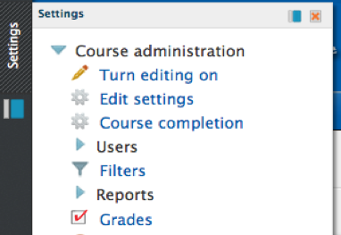
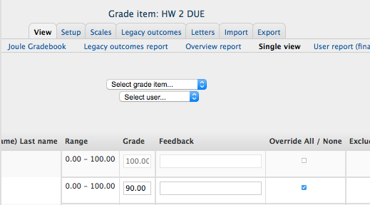

I cannot change grades when I try to update grades from the assignment interface.
When a grade is edited in the grade book via the “Grader Report” the grade is locked. The reasoning is that the grade can't be undone by the grading features in assignments and quizzes. The grade has been overridden via the “Grader Report”. You can change the setting back and unlock those grades and remove the override.
1. From the Course Home Page click on Settings then "Grades."

*Settings block may be on the right or left side of your screen. *
2. Click "Turn Editing On" in the upper right-hand corner.
3. The grades that have been overridden will have a shaded background to highlight them. Click the Edit icon (the yellow pencil) above the grades you wish to unlock.
4. A list of settings will then appear for that grade. Uncheck the "Overridden" option.

5. Click "Save Changes" to finish unlocking the grade.
6. Repeat the process for all the other grades you need to unlock.
7. Return to the assignment and you should now be able to update the grades as needed.